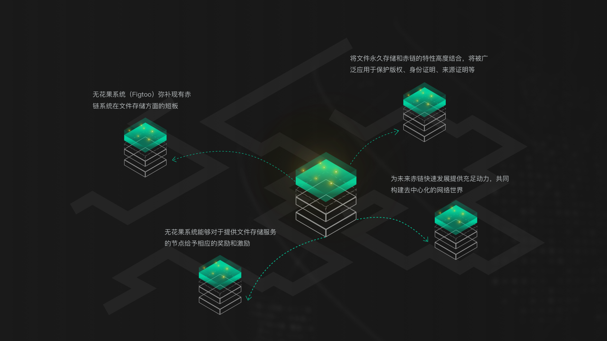
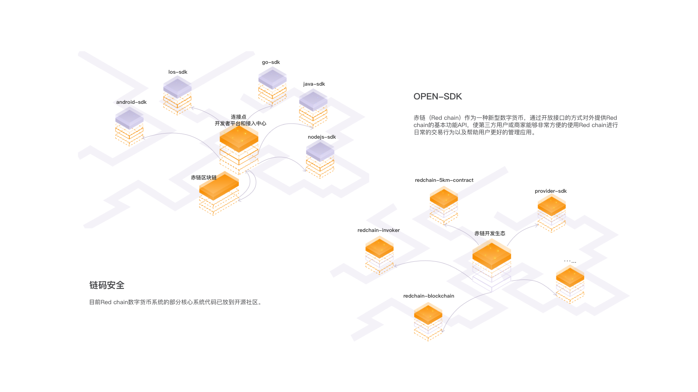
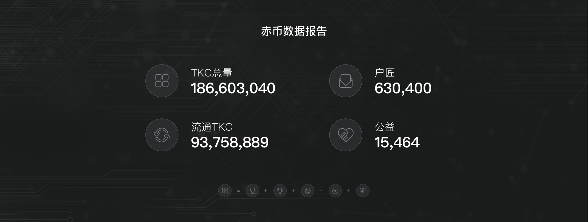

赤链（Red chain）采取分层设计，系统分前端应用层、中间接入层、区块链层、数据层，各层之间独立部署，协议交互，接入层服务部署架构，服务典型大型互联网分布式架构体系。系统提供分布式前端接入LSB；前端根据用户请求，自动路由到接入层服务器；接入层服务器通过服务治理平台，保障系统高并发、高可用，寻找到最优系统上执行，最终实现没有任何一个单点故障
模块架构在系统架构基础上细分。顶层面向APP，应用开发；服务层面向具体应用、社区接入，主要面向用户和开发者、运营人员；接入层衔接区块链和应用中心枢纽。区块链路是系统基础，分别执行链码、执行合约、共识算法、分布式执行，写入分布式账户中，增加区块到赤链系统中；运维层提供整个系统存储、网络监控、设备性能监控、部署实施、自动化运营的平台，保障整个区块链安全、快速运行，应用架构主要是从业务层面，所有模块组织成独立业务，全面支持各种业务顺利落地。Red chain区块链打通商业，结合实际生产、生活场景，让区块链技术创新融入生活，我们在应用层提供认证、运营、监控等一系列应用可供用户弹性操作，使用户和业务平滑接入Red chain生态和系统
共享全球存储资源，利用赤链技术，将文件分片存储，构建去中心化的云存储，成为全球赤链分布式文件存储的基础设施
应用SDK内置了跨链协议，通过该协议可以与主链进行资产互通，也就是说主链承担了资产路由的功能，通过资产路由，各个应用之间可以实现多种资产的流转。 阿希的生态体系包含多条链，每个链可以承载多个代币或资产，每个代币或资产也可以转入多条链上
赤练生态在技术层面，等到了业界众多开发大神的技术认可，众多区块链fan加入赤链，利用区块链去中心化的特点，让用户群体智慧筛选出整个社区最有趣的新闻资讯。同时加入代币激励机制，利用经济激励激发参与者的积极性，解决优质内容难以识别和变现问题，让价值回归于价值创造者和传递者手里，让所有的参与者共同分享价值
请点击查看详情(Ps：若加载缓慢那就活动活动颈椎腰椎，好好做设计远离职业病)了解更多产品细节请访问赤链官网
每张原型图的绘制都是为了给用户更有趣的世界